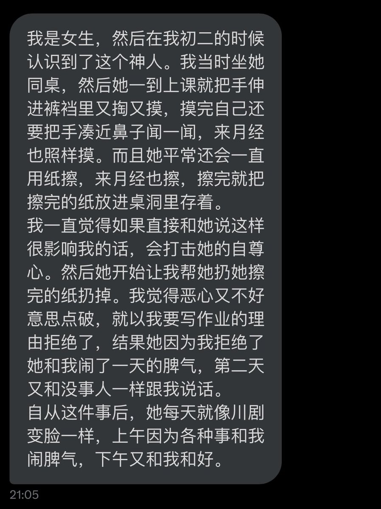
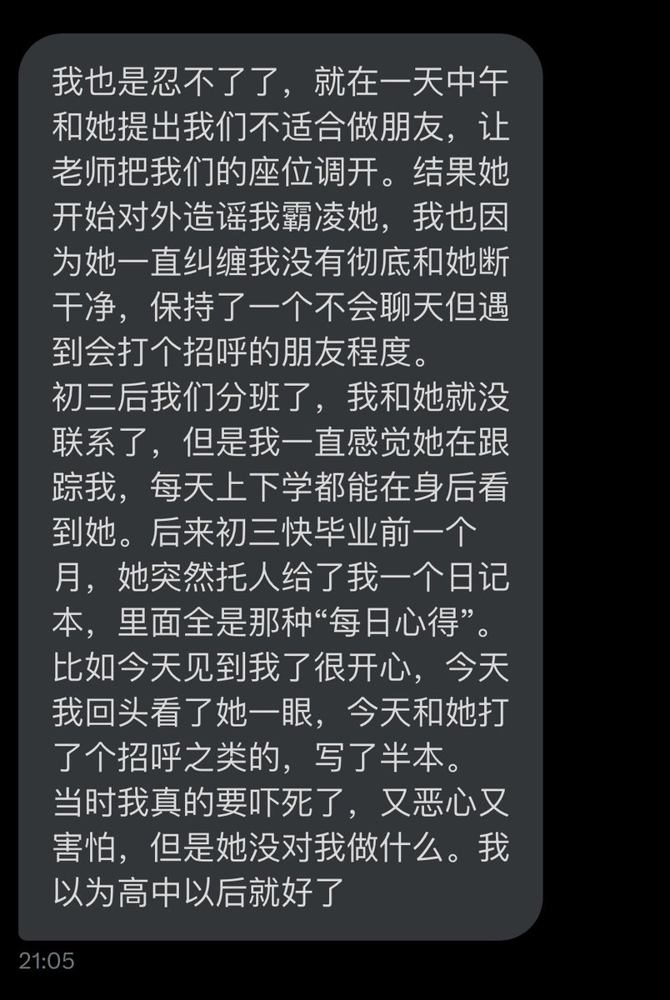
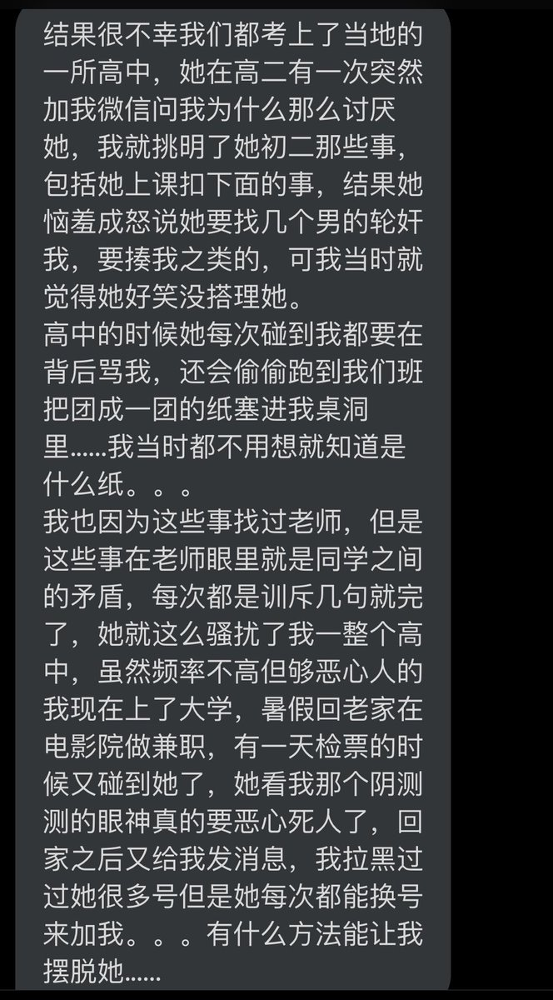

腐烂苹果酱
@ppppggggjjjj
想到初中的男同桌 长得很诡异地白 胖胖的 看着精神不太正常实则也确实
每天上课都坐我旁边手疯狂揉搓裤裆 我们座位挤 他手臂手肘揉的时候狂怼到我
就这样在我旁边搞了半个学期 每次搞完裤裆还都是湿的（不是我有意看的 是他主动和我分享的，，
再讲下去我要应激了



饮冰的刃
@Ash1nzou
我真的有点害怕上课自慰的这个群体了 https://t.co/8codTKMsdh